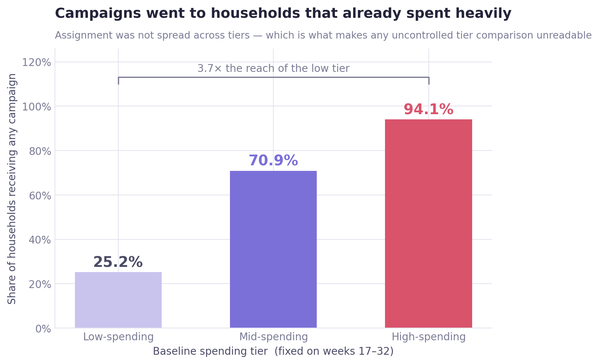
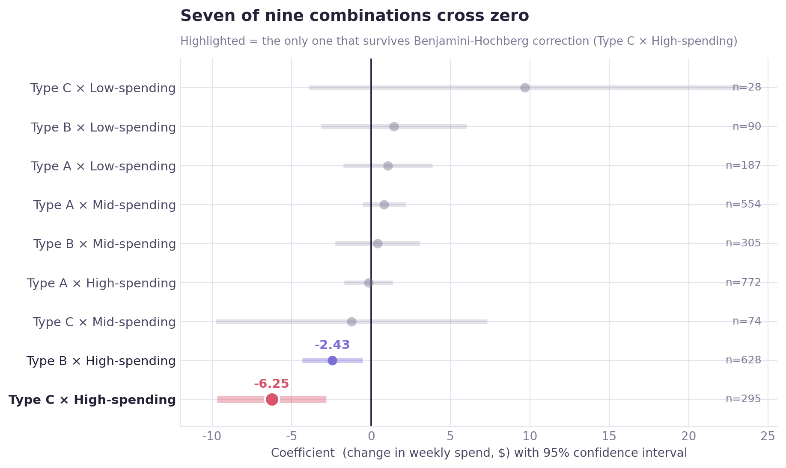
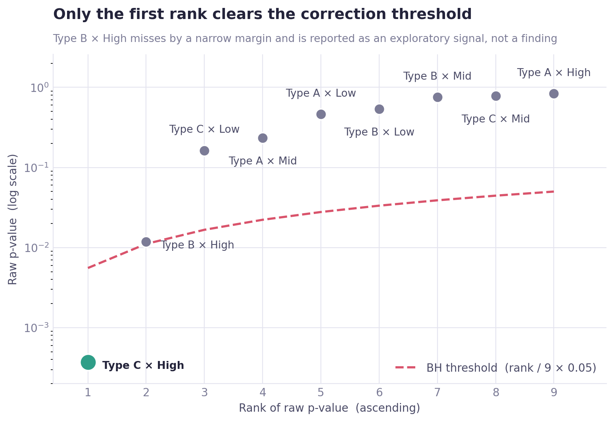
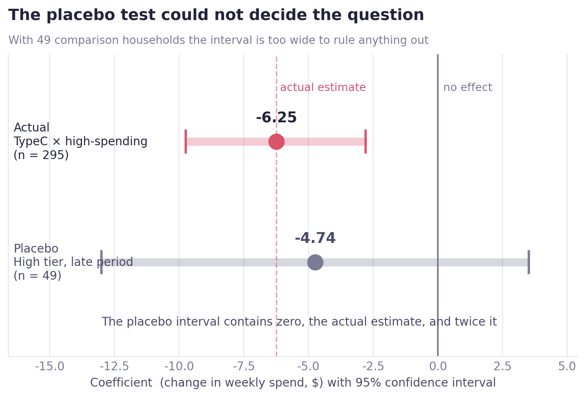

00
Executive summary
The whole case in one screen
Campaigns were sent almost exclusively to households that already spent heavily. Any comparison that doesn't hold the household constant measures that decision, not the campaign.
The same data, two ways
| Baseline tier | Pooled comparison active vs quiet weeks, no controls | Two-way fixed effects |
|---|---|---|
| Low-spending | +242% | Not significant — p = 0.163 |
| Mid-spending | +60% | Not significant |
| High-spending | +23% | TypeC: β = −6.25 (≈ −8.6%) |
Campaign reach was 94.1% in the high tier against 25.2% in the low tier. The sign doesn't just shrink under controls — it flips.
Key findings
Exactly one of nine tier × type combinations survives correction for multiple comparisons. TypeC × high-spending, β = −6.25, BH-adjusted p = 0.0033, n = 295 households.
The surviving signal points downward. Spending in campaign weeks runs about 8.6% below baseline for heavy spenders receiving TypeC — the opposite of what the uncontrolled comparison suggested for every tier.
Clustering the standard errors was necessary, and provably so. The model F-statistic reads 11.544 without clustering and 2.313 with it. Left unclustered, the analysis would have reported inflated significance across the board.
The placebo test could not settle causality. With only 49 comparison households its confidence interval spans zero, the estimated effect, and twice the estimated effect simultaneously.
How this is reported
A stable association, not an effect
The TypeC × high-spending result is robust to multiple-comparison correction and to exposure-history splitting. Whether it reflects a campaign response or a targeting decision could not be separated — and it is reported as the former only.
At a glance
01
Overview
What was measured, and why the obvious answer is wrong
A retailer runs 30 campaigns over roughly 70 weeks and wants to know which customers respond. The natural analysis is to compare spending in weeks when a campaign was running against weeks when none was — and broken out by customer tier, that comparison produces a striking result.
It also produces the wrong one. Campaigns were not assigned at random. They went to 94.1% of heavy spenders and 25.2% of light ones, so the comparison between tiers is contaminated by who received campaigns before any behavioural response enters it.
What this case is really about
Less about campaigns than about what it takes to make an observational comparison readable — and about being honest when, even after doing that work, the causal question stays open.
Scope
This was a team project. The campaign × tier analysis on this page is mine, end to end — design, estimation, correction, and the robustness and placebo checks.
The most useful output here is a negative one: an uncontrolled before/after comparison of these campaigns reaches the wrong conclusion, in the wrong direction, in every tier.
02
Business question
One question, and the trap inside it
Does campaign response differ by a household's baseline spending tier?
Concretely: when a campaign is running, does a household's weekly spend move — and does that movement depend on whether the household was a light, medium or heavy spender before any campaign began?
The trap circular reasoning
If tiers are defined using data from the campaign period, the analysis produces this chain: campaign runs → spending rises → household classified as high-spending → "high-spending households spent more during campaigns."
That conclusion is guaranteed regardless of whether campaigns do anything. Tiers therefore had to be fixed before the first campaign ran, and never recomputed.
Tier window
weeks 17–32
First campaign
week 33
Overlap
none
Combinations tested
9
03
Data
The panel, the tiers, and one structural risk
Source
Dunnhumby "The Complete Journey" — household transactions plus campaign delivery records. Reshaped into a balanced household × week panel covering weeks 33–101, the period from the first campaign launch onward.
The dataset was used for educational portfolio purposes. All analysis, statistical testing, interpretations, and recommendations were independently developed as part of this project.
Baseline tiers — fixed on weeks 17–32, before any campaign
| Tier | Households | Mean weekly spend | Range |
|---|---|---|---|
| Low-spending | 834 | $3.85 | $0.00 – $10.03 |
| Mid-spending | 834 | $20.36 | $10.05 – $33.88 |
| High-spending | 832 | $72.75 | $33.88 – $378.60 |
Three tiers, not five. Quintiles were tested as a secondary specification and abandoned — the smallest campaign type left cells of 16 and 25 households, too few to estimate stably. Cell sizes were checked before the model ran, not after it misbehaved.
142 households (5.7%) had no transactions at all in the tier window and were assigned $0, placing them in the low tier — a floor-effect risk tracked through the rest of the analysis.
One structural risk, checked rather than assumed passed
Of the 1,008 households receiving more than one campaign type, 86.2% received them in the same week — enough simultaneous exposure to threaten the interaction terms with multicollinearity.
VIF came back at 1.02–1.12 across all nine interaction dummies. The reason: simultaneously-active rows are only 4.1% of the 172,500-row panel, and the remaining 95.9% dilute the correlation. The risk was real, and the diagnostic cleared it.
04
Identification strategy
Four design choices carry the entire analysis
① Baseline tiers fixed before any campaign ran
Weeks 17–32 only, with the first campaign starting in week 33 — zero overlap. This is the anti-circularity rule from section 02, implemented.
② Household fixed effects
Each household is compared against itself in campaign weeks versus quiet weeks. This removes the permanent individual difference of "this household simply spends more" — the exact confounder that makes the pooled comparison unreadable.
③ Week fixed effects
Christmas, Thanksgiving and other calendar effects hit every household at once. Week fixed effects absorb them so seasonality is not mistaken for campaign response.
④ Household-clustered standard errors
An 84-week repeated-observation panel has serial correlation within households; ordinary standard errors ignore it and understate p-values.
F-statistic — unclustered 11.544 (p = 0.0000) · clustered 2.313 (p = 0.0135)
This was verified rather than assumed. Without clustering, the analysis would have reported inflated significance — and the difference is visible in a single diagnostic.
The model
spend ~ Σ(campaign type × baseline tier) + household fixed effects + week fixed effects clustered SE at household level
05
Analysis
What the uncontrolled comparison said, and what happened to it
A · The pooled comparison
Within each tier, household-week observations were split by whether any campaign was active that week, and the two pooled means compared — with no household or week fixed effects applied.
| Tier | Quiet weeks | Active weeks | Apparent change |
|---|---|---|---|
| Low-spending | $11.54 | $39.49 | +242% |
| Mid-spending | — | — | +60% |
| High-spending | — | — | +23% |
Read at face value this is a clean heterogeneous effect, with light spenders responding several times more strongly than heavy ones. Two things make it unreadable.
The comparison is pooled across households. Even inside one tier, the households receiving campaigns may simply be different households from those that did not — selection sits inside the comparison untouched.
The active-week sample is tiny. Those active-week observations are only 5.1% of the tier's household-weeks — the same fact the reach rate shows from the other direction.

B · The same question under fixed effects
With each household compared against itself and calendar effects absorbed, two of the nine combinations reach significance — and both sit in the tier the pooled comparison said responded least.
| Combination | β | p | Households | Relative size |
|---|---|---|---|---|
| TypeC × high-spending | −6.25 | 0.0004 | 295 | ≈ −8.6% vs baseline |
| TypeB × high-spending | −2.43 | 0.0118 | 628 | ≈ −3.3% vs baseline |
The sign is the opposite of the pooled comparison. The pooled view showed gains in every tier; the fixed-effects model shows reductions in the high tier and nothing at all in the low tier — TypeC × low-spending returns p = 0.163, despite that being the exact cell the +242% came from.
A within-model R² of 0.0004 is expected and not a problem: campaigns explain a sliver of weekly spending variance, and with 172,500 observations a small signal is still detectable. The F-test for poolability (38.138, p < 0.0001) confirms the fixed effects were necessary.

C · Correcting for nine simultaneous tests
Testing nine combinations at once inflates the chance of a false positive, so Benjamini-Hochberg false-discovery-rate control applies.
| Rank | Combination | raw p | BH threshold | Verdict |
|---|---|---|---|---|
| 1 | TypeC × high-spending | 0.000371 | 0.00556 | survives |
| 2 | TypeB × high-spending | 0.011832 | 0.01111 | fails |
TypeB misses by a margin small enough that it would have been tempting to keep. It is downgraded to an exploratory signal rather than reported as a finding — the correction only means something if it is allowed to bind.

D · Is the result an artifact of repeat exposure?
With 30 campaigns rolling out over 70 weeks, this is a staggered adoption design — households already treated by earlier campaigns can end up serving as controls for later ones, a known source of bias in two-way fixed effects.
| Exposure history | Households | β | p |
|---|---|---|---|
| First exposure | 295 | −4.89 | 0.009 |
| Repeat exposure | 131 | −9.09 | 0.003 |
These counts are nested, not additive. 295 is every high-tier TypeC recipient; 131 of them received TypeC more than once, and the other 164 exactly once. The split is applied to week-level observations of the same households, so adding the two would double-count.
Both splits stay significant, so the headline result is not driven by repeat-exposure households dominating the estimate. Whether the larger repeat effect reflects reinforced discount-waiting or repeated targeting of already-declining households cannot be separated here.
06
Results
One surviving signal — and what the placebo test could not tell us
Final result
Of nine campaign-type × spending-tier combinations, one shows a statistically stable association after multiple-comparison correction.
Coefficient
−6.25
Relative size
≈ −8.6%
BH-adjusted p
0.0033
Households
295
Can we call it causal?
No. And the test built to decide the question came back unable to decide it.
A placebo test was run on the 916 households that received no campaigns at all. If the same downward pattern appears among households no campaign ever touched, it is not the campaign.
| Estimate | β | p | 95% CI | n |
|---|---|---|---|---|
| Actual — TypeC × high-spending | −6.25 | 0.0004 | ≈ (−9.7, −2.8) | 295 |
| Placebo — high tier, late period | −4.74 | 0.261 | (−13.00, +3.52) | 49 |
The placebo test cannot decide anything. With 49 comparison households, its interval is wide enough to contain zero, the estimated effect (−6.25), and twice that effect (−13.0) simultaneously.
The clearest evidence that the placebo itself is unstable: computed descriptively it gives −1.0%, computed by regression it gives −4.74. Two methods disagreeing that sharply on the same quantity is a sample-size problem, not a result.

Two explanations the data cannot separate
| # | Explanation |
|---|---|
| 1 | TypeC coupons induce discount-waiting behaviour, genuinely suppressing spend in that week |
| 2 | The retailer concentrated TypeC on heavy spenders whose spending was already declining — the campaign is a response to the trend, not its cause |
Nothing in the data records how campaign recipients were selected, so "why did this household receive this campaign at this moment" is unanswerable. That is the root cause of the placebo test's failure, and the reason explanation 2 stays open.
Reported as
Association, not effect
Robust to multiple-comparison correction and to exposure-history splitting — but not established as causal, and not presented as such.
07
Business insights
What a marketing team should take from this
① The standard campaign report is wrong here, in both size and direction
Before/after or active/quiet comparisons are how campaign performance is usually reported. On this data that method says every tier gains, with light spenders gaining most. Holding households constant reverses it. Any campaign evaluation built on uncontrolled comparison would misdirect budget across all three tiers.
② Campaign targeting is so skewed that it breaks measurement
94.1% reach in the high tier against 25.2% in the low tier means the data cannot answer "do light spenders respond?" — there is barely any treated variation to read. Deliberately holding out a random slice of each tier would make the next campaign measurable.
③ There is a reason to look harder at TypeC on heavy spenders
The one surviving signal is negative. If it is a genuine response, coupon-style promotions may be training the most valuable customers to wait for discounts. If it is targeting, the campaign is being sent to customers already on the way down and credited with their decline. Both readings warrant investigation; neither is established.
Recommendations
01 Hold out a randomised control slice on the next campaign
- Who
- Campaign operations and marketing analytics
- What
- Withhold a random sample within each spending tier from the next campaign send, sized to give usable power in the low tier specifically
- Why
- The entire ambiguity in this analysis traces to one gap — no record of how recipients were chosen and no untreated comparison group in the tier where the result sits. A holdout removes both in one step
- How to verify
- Compare held-out against treated households within tier; with randomised assignment this becomes a genuine effect estimate rather than an association
02 Stop reporting campaign lift from active-vs-quiet comparisons
- Who
- Marketing reporting
- What
- Replace pooled active/quiet comparisons with within-household comparison as the default reporting method, and publish reach rate alongside any tier breakdown
- Why
- The +242% figure is what the standard method produces on this data. The same cell returns p = 0.163 once households are held constant
03 Log the targeting rule
- Who
- Campaign operations
- What
- Record the selection criteria and the timing trigger for each campaign send, stored alongside delivery records
- Why
- Reverse targeting — sending to customers already declining — cannot be ruled out without it, and it is the single missing field that made this analysis stop short of a causal claim
08
Limitations
Why this stops at association
Parallel trends are not cleanly satisfied
A pre-campaign test on weeks 17–32, checking whether future recipients and non-recipients were already diverging:
| Sample | Interaction coef. | p | Verdict |
|---|---|---|---|
| Full sample | 0.296 | 0.087 | Passes at 5%, borderline at 10% |
| Low tier | 0.025 | 0.764 | clean |
| Mid tier | 0.308 | 0.053 | borderline |
| High tier | 0.333 | 0.613 | passes, but only 49 controls |
Only the low tier is genuinely clean. The high tier — exactly where the result lives — has too few comparison households for "passing" to carry weight.
Small samples recur
Low tier × TypeC has 28 households; the high-tier placebo comparison group has 49. The same instability appears at every point where a subgroup conclusion is needed.
The targeting rule is unknown
Nothing records how recipients were selected, so the reverse-targeting explanation cannot be excluded. This is the root cause of the placebo failure.
Staggered adoption
30 campaigns rolling out over time means already-treated households can act as controls for later ones — a known TWFE bias. The exposure-history split addresses it partially, not fully.
Observational data
Household and week fixed effects plus a placebo test control a great deal. None of it substitutes for randomised assignment.
09
Tools & Skills
What was used, and for what
Programming & data handling
Causal inference & panel methods
Statistics
Practices
10
Repository
Notebook, code, and full write-up
View the analysis notebook on GitHub →The repository contains the complete Jupyter notebook with every test and figure reproducible from the raw dataset, along with the full README write-up covering the eight analysis stages compressed on this page.
The other half of this project
Case 01 asks a different question of the same dataset — whether revenue growth is concentrated in high-value households, and who actually drove it. Read Case 01 →